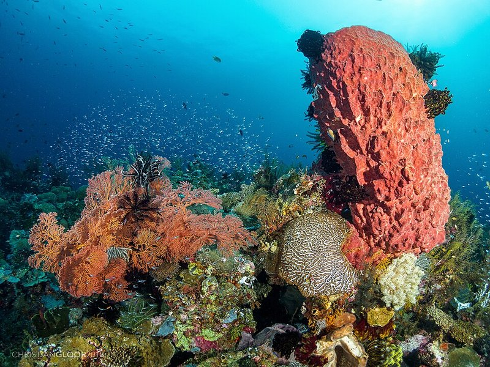
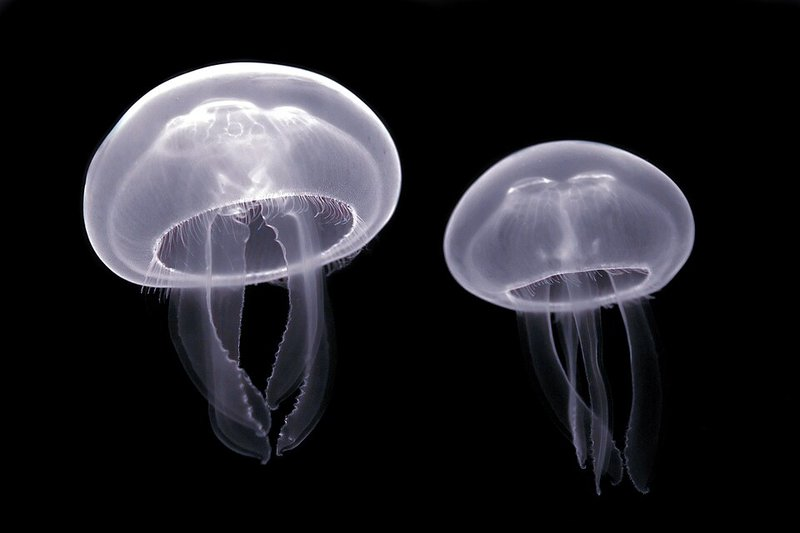
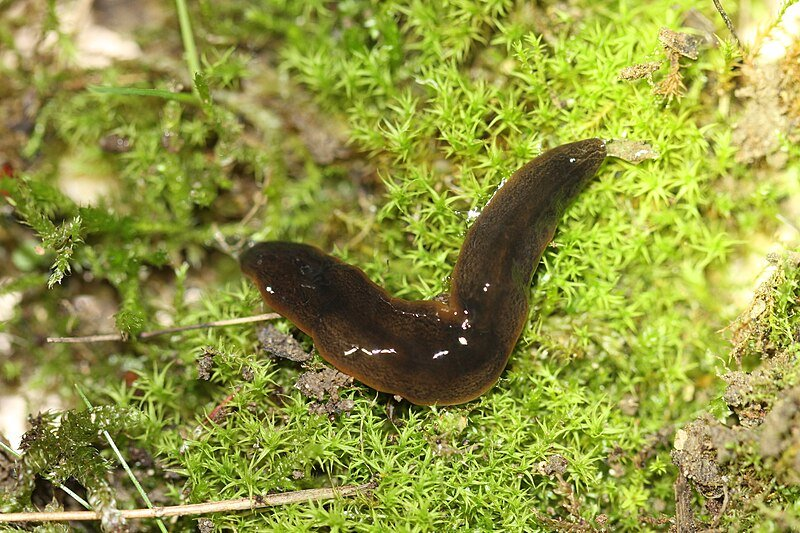
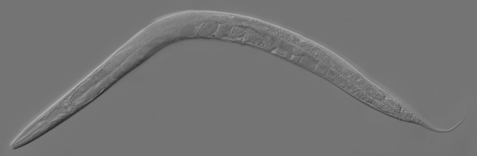
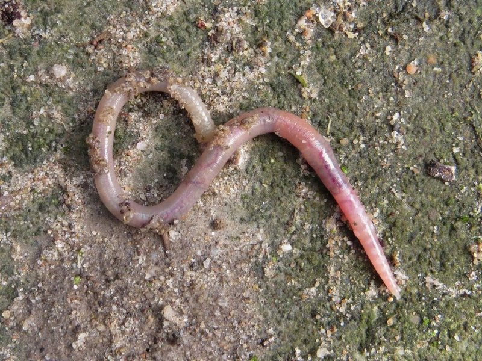
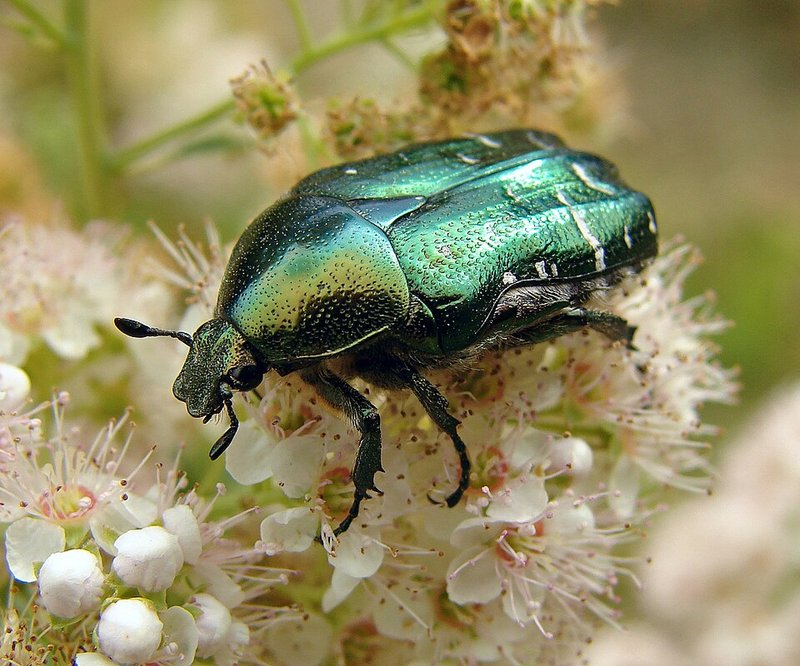
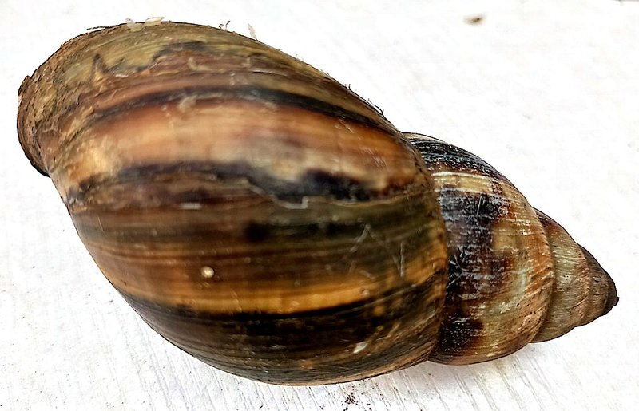
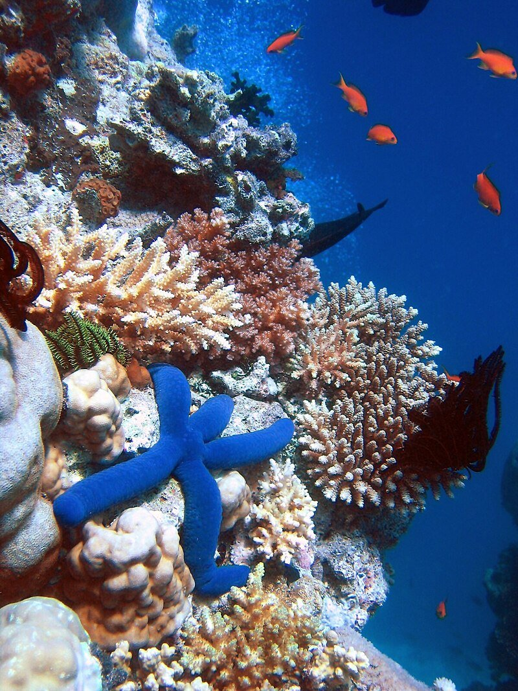
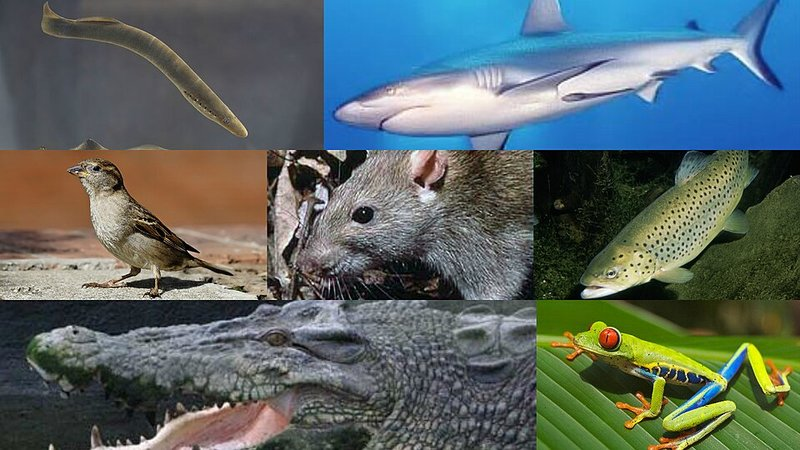

Animals are everywhere — in the ocean, in the soil, in the air, and even inside your body. Scientists have identified about 1.5 million animal species, but there might be millions more we haven't discovered yet.
To make sense of all this diversity, scientists sort animals into groups called phyla (singular: phylum). A phylum is one of the biggest groups in the animal kingdom. Think of it like organizing a giant library — each phylum is a different section of the library, grouping animals by their basic body plan.
There are about 35 animal phyla, but 9 of them contain the vast majority of known species.
One of the first things scientists look at when classifying an animal is its body symmetry — how its body parts are arranged. There are three main types:
Asymmetry means no definite shape pattern at all. Sponges (phylum Porifera) are asymmetrical — they grow in all sorts of random shapes.
Radial symmetry means the body is arranged around a central point, like a wheel or a pie. Jellyfish and sea stars have radial symmetry — you can slice them in many directions and get matching halves.
Bilateral symmetry means the body has a left side and right side that are mirror images, like you! Most animals — from worms to whales — are bilaterally symmetrical. This body plan is great for animals that move in one direction, because sense organs can be concentrated at the front (that's called cephalization).
Sponges are the simplest animals on Earth. They have no brain, no heart, no muscles, and no true tissues or organs. So how are they animals at all? Because they're multicellular, they eat other organisms (heterotrophs), and they have no cell walls.
Sponges are filter feeders — they pump water through their bodies, trapping tiny food particles in special cells. A single sponge can filter thousands of liters of water per day!
The name "Porifera" means "pore bearer," referring to the tiny holes covering their bodies. There are over 5,000 known species of sponges, and they're all aquatic — mostly marine.

Jellyfish, corals, and sea anemones all belong to phylum Cnidaria (pronounced "nye-DARE-ee-uh"). The name means "stinging nettle" because these animals have special stinging cells called cnidocytes.
When something touches a cnidocyte, it fires a tiny barbed thread — like a microscopic harpoon — that injects venom into prey or predators.
Cnidarians have radial symmetry and come in two body forms: the medusa (free-swimming, like a jellyfish) and the polyp (attached to a surface, like a coral or anemone). Most cnidarians live in the ocean.
Fun fact: coral reefs, built by tiny coral polyps, support about 25% of all marine species!

Three of the nine major phyla are often called "worm phyla," but they're actually very different from each other!
Platyhelminthes (flat worms, ~25,000 species) have flat, ribbon-like bodies with no body cavity. They include planarians (which can regenerate if cut in half!), tapeworms, and flukes.
Nematoda (roundworms, ~25,000 described but possibly 1 million+) have round, thread-like bodies with a partial body cavity. They're everywhere — some scientists estimate 4 out of every 5 animals on Earth are nematodes!
Annelida (segmented worms, ~22,000 species) have bodies divided into ring-like segments. Earthworms, leeches, and marine polychaete worms are annelids. Their segmentation lets different parts of the body specialize for different jobs.



If there were a competition for "most successful animal group," arthropods would win by a landslide. With over 1.1 million described species, phylum Arthropoda contains more species than all other animal phyla combined!
The name means "jointed foot," and their key feature is an exoskeleton — a hard outer shell made of chitin that protects their bodies. Because exoskeletons can't grow, arthropods must molt (shed their old exoskeleton) to get bigger.
Arthropods include insects (~1 million species), arachnids (spiders, scorpions, ticks), crustaceans (crabs, lobsters, shrimp), and myriapods (centipedes, millipedes). Their jointed legs and exoskeletons allow incredible diversity — they've colonized every habitat on Earth, from deep oceans to high mountains to the insides of other animals.

Mollusca (~85,000 species) are soft-bodied animals that often have a hard shell. The name means "soft." They have a muscular foot for movement and a mantle — a tissue layer that produces the shell. Mollusks include snails, clams, oysters, octopuses, and squids. Octopuses and squids are the brainiest invertebrates!
Echinodermata (~7,000 species) means "spiny skin." Sea stars, sea urchins, sand dollars, and sea cucumbers are all echinoderms. They have a unique water vascular system — a network of water-filled tubes that powers their tube feet for movement.
Here's something surprising: echinoderms start life with bilateral symmetry as larvae, but adult echinoderms develop pentaradial (5-fold) symmetry. And even more surprising — echinoderms are our closest invertebrate relatives! Both echinoderms and chordates are deuterostomes (animals whose anus forms first during development).


Phylum Chordata includes all vertebrates — animals with a backbone — plus a few invertebrates like tunicates and lancelets. The defining feature is a notochord, a flexible rod that supports the body. In vertebrates, the notochord is replaced by a bony or cartilaginous spine during development.
With about 100,000+ species, Chordata includes five classes of vertebrates: fish (the most diverse, ~35,000 species), amphibians (~7,000), reptiles (~15,000), birds (~11,000), and mammals (~6,000).
Even though chordates include some of the largest and most familiar animals (whales, elephants, eagles, humans), vertebrates make up only about 5% of all animal species. The other 95% are invertebrates!
Classification isn't about what's "better" — it's about understanding how organisms are related and how their body plans solve the challenges of survival.
